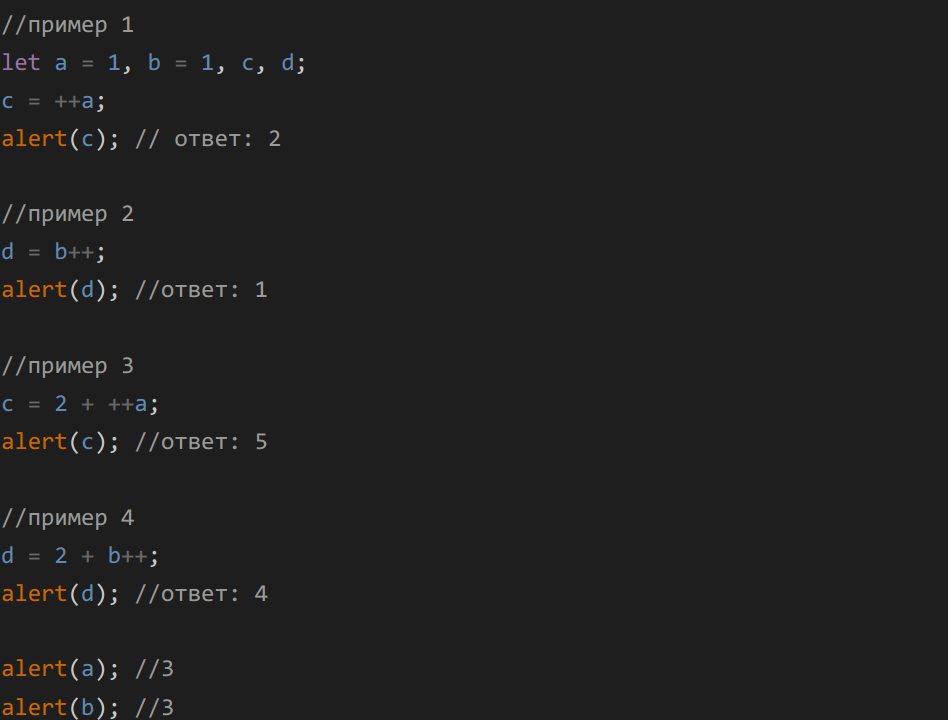

Объясните почему код даёт именно такие результаты?

Таков принцип работы пре и пост инкрементов. Преинкремент сначала
увеличивает оригинальное значение, а затем присваивает значение
переменной. Постинкремент сначала присваивает оригинальное значение, а
затем увеличивает значение.
let a = 1, b = 1, c, d
c = ++a - инкрементирует "a" и присваивает "a" переменной "с"
a = 2, c = 2
d = b++ - присваивает "b" переменной "d" и инкрементирует "b"
b = 2, d = 1
c = 2 + ++a - инкрементирует "a" складывает с числом "2" и присваивает
переменной "с"
a = 3, c = 5
d = 2 + b++ - складывает "b" с числом "2" присваивает переменной "d" и
инкрементирует "b"
b = 3, d = 4
Итог: a = 3, b = 3, c = 5, d = 4 (пример выводится в консоль)
Чему будут равны переменные x и a в примере ниже? Написать почему так
произошло (описать последовательность действий).
let a = 2; let x = 1 + (a *= 2) // a = 4, x = 5
Объявить две переменные a и b и задать им целочисленные произвольные
начальные значения.
Затем написать скрипт, который работает по
следующему принципу:
function task_three() {
let a = Math.round(Math.random() * 10 * ((Math.random() - 0.5) * 2))
// присваивает рандомное число от -9 до 9
let b = Math.round(Math.random() * 10 * ((Math.random() - 0.5) * 2))
// аналогично, так интересней просто)
if (a >= 0 && b >= 0) {
console.log(a - b)
} else if (a < 0 && b < 0) {
console.log(a * b)
} else {
console.log(a + b)
}}
Реализовать основные 4 арифметические операции (+, -, /, *) в виде функций с двумя параметрами. Т.е. например, функция для сложения должна принимать два числа, складывать их и возвращать результат. Обязательно использовать оператор return.
Реализовать функцию с тремя параметрами: function mathOperation(arg1, arg2, operation), где arg1, arg2 – значения аргументов, operation – строка с названием операции. В зависимости от переданного значения операции (использовать switch) выполнить одну из арифметических операций (использовать функции из задания 4) и вернуть полученное значение.
function mathOperation(arg1, arg2, operation) {
switch (operation) {
case "+":
return addition(arg1, arg2)
break;
case "-":
return subtraction(arg1, arg2);
break;
case "*":
return multiplication(arg1, arg2);
break;
case "/":
return division(arg1, arg2);
break;
default:
alert("неверная операция");
} }
Программа должна спросить у пользователя число, это будет количество денег, которое он хочет положить на счет в банке. Затем программа должна выдать примерно такое сообщение:
То есть ваша задача выводить слово «рубль» в правильном падеже, в зависимости от введенного числа.